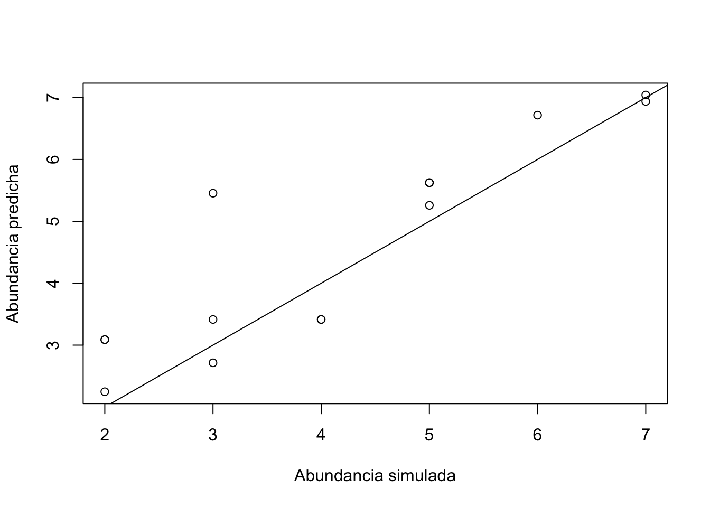
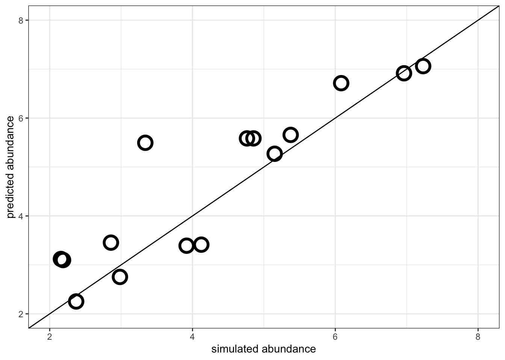

5 The simplest N-mixture model with unmarked
Como ya hemos dicho, los N-mixture models nos permiten estimar a la vez la probabilidad de detección y la abundancia de nuestra especie a partir de muestreos repetidos. Para ajustar este tipo de modelos utilizaremos la función pcount del paquete unmarked. En primer lugar, debemos preparar los datos para que unmarked pueda leerlos. Utilizaremos la función unmarkedFramePCount para indicar cuales son los 15 muestreos repetidos en 4 ocasiones
As we have already said, the N-mixture models allow us to estimate both the probability of detection and the abundance of our species from repeated samplings. To adjust these types of models we will use the pcount function of the unmarked package. First of all, we need to prepare the data so that unmarked can read it. We will use the unmarkedFramePCount function to indicate which are the 15 samples repeated 4 times
dataUM.s4 <- unmarked::unmarkedFramePCount(y = dataset[,3:6])# Echamos un vistazo al objeto dataUM
head(dataUM.s4)# hack the s4 object to get the data
knitr::kable(head(dataUM.s4@y))| O1 | O2 | O3 | O4 |
|---|---|---|---|
| 3 | 4 | 0 | 4 |
| 1 | 1 | 2 | 0 |
| 1 | 1 | 0 | 2 |
| 3 | 3 | 4 | 1 |
| 2 | 3 | 2 | 1 |
| 0 | 3 | 2 | 3 |
Ahora podremos ajustar nuestro modelo con la función pcount. Vamos a ajustar el modelo más sencillo posible. En este ejemplo, ni la abundancia ni la propabilidad de detección vienen determinados por ninguna covariable, simplemente responden a un proceso de Poisson con λ=4 y a una distribución binomial con p=0.4 respectivamente. Lo que intentaremos averiguar con este modelo será esos dos parámetros.
Now we can fit our model with the pcount function. We are going to adjust the simplest possible model. In this example, neither the abundance nor the probability of detection are determined by any covariate, they simply respond to a Poisson process with λ = 4 and a binomial distribution with p = 0.4 respectively. What we will try to find out with this model will be those two parameters.
# Como en este modelo no hay variables predictoras, las fórmulas de detectabilidad
# y de abundancia las dejamos como ~1 respectivamente.
#
# (As there are no predictor variables in this model, we leave the detectability
# and abundance formulas as ~ 1 respectively.)
#
# La sintaxis de pcount sería:
# pcount(fórmula_detectabilidad fórmula_abundancia, datos, número_suficientemente_alto)
# Para más información consultar help(pcount)
m1 <- unmarked::pcount(~1 ~1, data=dataUM.s4, K=50)
summary(m1)##
## Call:
## unmarked::pcount(formula = ~1 ~ 1, data = dataUM.s4, K = 50)
##
## Abundance (log-scale):
## Estimate SE z P(>|z|)
## 1.54 0.373 4.12 3.75e-05
##
## Detection (logit-scale):
## Estimate SE z P(>|z|)
## -0.596 0.561 -1.06 0.288
##
## AIC: 185.7303
## Number of sites: 15
## optim convergence code: 0
## optim iterations: 22
## Bootstrap iterations: 0La función nos devuelve las estimaciones de los parámetros λ y p transformados en log y logit respectivamente. Es decir, el modelo realmente ajusta el parámetro log(λ) y logit(p), por lo que a estas estimas hay que hacerles la transformación inversa:
The function returns the estimates of the parameters λ and p transformed into log and logit respectively. That is, the model really adjusts the parameters log (λ) and logit (p), so these estimates have to be carried out the inverse transformation:
# lambda estimada:
exp(coef(m1)[1]) # log## lam(Int)
## 4.643975# p estimada:
#exp(coef(m1)[2])/(1+exp(coef(m1)[2])) # log ratio o log odds = logit
plogis(coef(m1)[2]) # log ratio o log odds = logit; igual que arriba## p(Int)
## 0.3552852Como vemos, la estima de λ es de 4.64 frente a la real, que era de 4. Por otro lado, la estima de p es de 0.35, mientras que la p real o detectabilidad era de 0.4. No es un modelo perfecto, pero se ajusta bastante a la realidad. ¿Cómo podríamos mejorar estas estimas? Incrementando el número de sitios muestreados, aumentando el número de visitas en cada sitio, etc. En cualquier caso, podemos calcular las abundancias predichas por nuestro modelo para cada sitio visitado y ver cómo se ajusta con respecto a la abundancia real. Para ello, usaremos la función bup:
As we can see, the estimate of λ is 4.64 compared to the real one, which was 4. On the other hand, the estimate of p is 0.35, while the real p or detectability was 0.4. It is not a perfect model, but it is quite realistic. How could we improve these estimates? Increasing the number of sampled sites, increasing the number of visits to each site, etc. In either case, we can calculate the abundances predicted by our model for each site visited and see how it adjusts with respect to the actual abundance. To do this, we will use the bup function:
# bup() stores the estimated posterior distributions of the latent abundance
# or occurrence variables.
# Calculamos las predicciones de abundancias
N_m1.vector <- unmarked::bup(unmarked::ranef(m1)) # graficamos la relación entre las abundancias reales y las predichas
plot(dataset$trueN, N_m1.vector, xlab="Abundancia simulada", ylab="Abundancia predicha")
abline(0,1) # a 1:1 lineggplot() +
geom_jitter(aes(dataset$trueN, N_m1.vector),
shape = 1, colour = "black", size = 5, stroke = 2) +
geom_abline() +
xlim(2,8) +
ylim(2,8) +
theme_bw() +
labs( x = "simulated abundance",
y = "predicted abundance")

Vemos ahora que hemos solventado el problema de la infraestima. Este sencillo ejemplo nos sirve para explicar de forma clara el funcionamiento del modelo N-mixture. Sin embargo, la abundancia normalmente suele venir determinada por alguna covariable predictora que afecta a la distribución de las especies, como disponibilidad de recursos, refugio, etc. Por eso, a continuación simularemos otro set de datos y ajustatemos un modelo un poco más complejo.
We now see that we have solved the problem of underestimation. This simple example helps us to clearly explain how the N-mixture model works. However, the abundance is usually determined by some predictive covariate that affects the distribution of the species, such as availability of resources, refuge, etc. Therefore, next we will simulate another set of data and fit a slightly more complex model.